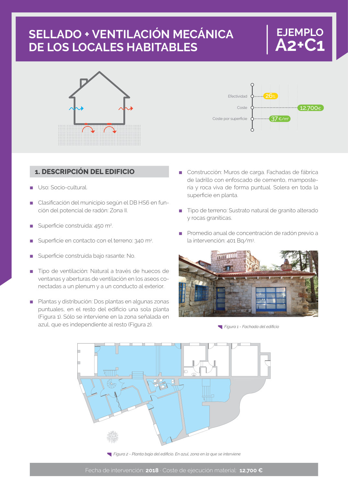

Ejemplo A2 C1 Sellado ventilacion mecanica de los locales habitables · edición 2018 · capa guia
Documento GUIA-PDF-da44924e40b7 · SHA-256 del PDF 9e66451d312dccc7d6f3ddf5e09443a0e38f03ca412ac44a15e68aeee660e036
Copia fiel del PDF fuente · Fuente oficial
Ficha de la disposición en la fuente oficial
Créditos y autoría en el PDF fuente. Reproducción con cita de fuente y autores.
Permiso literal: Se permite la reproducción total o parcial del contenido de este do Edición actual: septiembre 2020 cumento siempre y cuando se cite la fuente original y a sus autores.
Ejemplo A2 + C1 • Sellado + ventilación mecánica de los locales habitables A2+C1 55
Este documento ha sido elaborado por el Instituto de ciencias
de la construcción Eduardo Torroja (IETcc) bajo la supervisión
de la Dirección General de Agenda Urbana y Arquitectura del
Ministerio de Transportes, Movilidad y Agenda Urbana (MITMA).
El IETcc, perteneciente al Consejo Superior de Investigaciones
Científicas (CSIC), es el centro de investigación en edificación
SECRETARÍA GENERAL DE de referencia en España. La Unidad de Calidad en la Construc
AGENDA URBANA Y VIVIENDA MINISTERIO GOBIERNO DE TRANSPORTES, MOVILIDAD ción del IETcc asesora al MITMA en la elaboración del Código DE ESPAÑA Y AGENDA URBANA DIRECCIÓN GENERAL DE
AGENDA URBANA Y ARQUITECTURA Técnico de la Edificación que, desde el año 2019, cuenta con la
sección HS6 Protección frente a la exposición al radón.
MINISTERIO GOBIERNO DE CIENCIA Dirección y Coordinación: DE ESPAÑA E INNOVACIÓN
Ministerio de Transportes, Movilidad y Agenda Urbana
Isabel Marcos Anasagasti
Raquel Lara Campos
Eduardo González de Prado
Esta ficha forma parte de una serie de documentos englobados Instituto de ciencias de la construcción Eduardo Torroja CSIC
en una misma publicación, cuyo objetivo es constituir una he Pilar Linares Alemparte
rramienta de ayuda para el diseño de soluciones de protección
frente al radón: Autoras:
Pilar Linares Alemparte
■ Guía de rehabilitación frente al radón
Sonia García Ortega
Fichas de soluciones:
Diagnóstico y diseño de la solución:
A: De aislamiento del edificio Sonia García Ortega
■ Solución A1. Barrera frente al radón Pilar Linares Alemparte
■ Solución A1-1. Barrera frente al radón. Encuentros
■ Solución A2. Sellado de fisuras, grietas, encuentros y juntas Ejecución material de la obra:
■ Solución A3. Puertas estancas Ayuntamiento de Torrelodones
■ Solución A4. Creación de sobrepresión
Edita:
B: De reducción del radón antes de que penetre en los locales Centro de Publicaciones Secretaría General Técnica
a proteger Ministerio de Transportes, Movilidad y Agenda Urbana©
■ Solución B1. Ventilación del espacio de contención: cá Entidad colaboradora:
mara de aire Consejo Superior de Investigaciones Científicas · CSIC
■ Solución B2. Ventilación del espacio de contención: loca Ministerio de Ciencia e Innovación
les no habitables
■ Solución B3. Despresurización del terreno Catálogo de publicaciones de la Administración General
del Estado: publicacionesoficiales.boe.es
C: De reducción del radón tras penetrar en los locales a proteger
■ Solución C1. Ventilación de los locales habitables Centro virtual de publicaciones del Ministerio de Transpor
tes, Movilidad y Agenda Urbana: www.mitma.gob.es
Fichas de ejemplos:
Página web del Código Técnico de la Edificación:
■ Ejemplo A1+B3. Barrera frente al radón + despresurización www.codigotecnico.org
con red de tubos
■ Ejemplo A2+B1. Sellado + ventilación de la cámara sanitaria Maquetación y diseño gráfico:
■ Ejemplo A2+B3. Sellado + despresurización con red de tubos Lapizmente. Estrategia • Diseño Gráfico
■ Ejemplo A2+C1. Sellado + ventilación mecánica de los loca- Los contenidos o ideas recogidas en este documento pertenecen a
les habitables sus autores. Este documento está basado en el conocimiento dispo
nible en el momento de su publicación. No se aceptará por las institu
Publicación completa: ciones ni los autores implicados responsabilidad de ningún tipo por el
ISBN: 978-84-498-1045-9 uso de estas recomendaciones. Las figuras tienen carácter ilustrativo
NIPO: 796-20-136-5 y no deben interpretarse como detalles constructivos.
1ª edición: septiembre 2020 Se permite la reproducción total o parcial del contenido de este do
Edición actual: septiembre 2020 cumento siempre y cuando se cite la fuente original y a sus autores.Formatos: JSON del segmento · Markdown
SELLADO + VENTILACIÓN MECÁNICA DE LOS LOCALES HABITABLES DE LOS LOCALES HABITABLES ■ Construcción: Muros de carga. Fachadas de fábrica de ladrillo con enfoscado de cemento, mamposte ría y roca viva de forma puntual. Solera en toda la superficie en planta. ■ Tipo de terreno: Sustrato natural de granito alterado y rocas graníticas. ■ Promedio anual de concentración de radón previo a la intervención: 401 Bq/m3.
